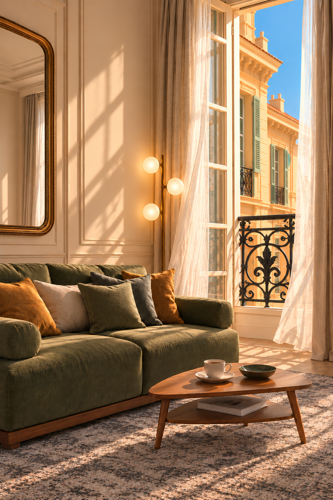

Se retrouver
Une chambre avec un lit double entièrement équipé et une seconde avec deux lits simples pouvant être rapprochés. Des espaces modulables pour partager le séjour tout en préservant son intimité.
La vie niçoise au pas de la porte, la mer à quelques pas. Maison Carlà vous accueille entre lumière, brise marine et charme du Carrè d’Or.
DÉCOUVRIR LA MAISON ↓
Au cœur vibrant de Nice, à quelques mètres de la place Masséna, Maison Carlà se trouve dans un immeuble historique du XIXe siècle. Entièrement rénové, cet appartement de deux chambres associe le caractère du bâtiment au confort moderne, avec des détails et un mobilier en harmonie avec l’élégance de la ville.
Des nuances d’olive, d’écru et de moutarde, des lignes inspirées des années cinquante : le charme d’autrefois rencontre le confort d’aujourd’hui, dans une maison où l’on se sent bien dès les premiers instants.
Une chambre avec un lit double entièrement équipé et une seconde avec deux lits simples pouvant être rapprochés. Des espaces modulables pour partager le séjour tout en préservant son intimité.
Au troisième étage, Maison Carlà bénéficie d’une splendide lumière naturelle et donne sur le Carrè d’Or, l’un des quartiers les plus élégants et les plus centraux de Nice. Les grandes fenêtres laissent entrer la brise marine et invitent à prendre un café en regardant le quartier s’animer. Dès la porte franchie, les rues du centre, les cafés et les boutiques sont là, et la mer à quelques pas. Chauffage et climatisation complètent le confort de la maison.
Un garage fermé et privé, situé à environ 600 mètres de l’appartement, pour laisser la voiture et découvrir la ville à pied.
Micro-ondes, réfrigérateur avec compartiment congélateur et plaque à induction : tout le nécessaire pour préparer un petit-déjeuner tranquille ou un dîner après une journée en ville.
Machine Nespresso, grille-pain et bouilloire, pour commencer la journée avec un café, un thé et le parfum du pain grillé.
En alternative à sa configuration avec deux lits simples, la seconde chambre se transforme en espace de travail avec bureau, prises électriques et une belle lumière naturelle.
Des carreaux de zellige et des finitions de qualité donnent du caractère à la salle de bains, où les matériaux et les détails sont choisis avec le même soin que dans le reste de la maison.
Cette maison est dédiée à notre mère Carla, à sa légèreté et à sa joie de vivre, qui ont guidé ses pas jusqu’ici. À son amour de la beauté, du soleil de Nice et de cet art de savourer les choses simples.
QUE CETTE DOUCEUR ACCOMPAGNE AUSSI VOTRE SÉJOUR.La place Masséna à quelques mètres, les cafés et les boutiques du centre à deux pas, le Vieux-Nice et la promenade des Anglais accessibles à pied. Une adresse qui permet de découvrir les lieux emblématiques du centre sans planifier chaque déplacement : sortir sans programme, se perdre dans les rues et sur les places, puis retrouver facilement la maison.
Les arcades de Place Masséna, les ruelles du Vieux-Nice et la Promenade des Anglais composent le décor de vos promenades. Entre façades à volets et terrasses de café, découvrez le charme niçois au fil de vos envies.
Maison Carlà se trouve rue Masséna, au cœur de Nice, à quelques mètres de la place Masséna. Situé au troisième étage, l’appartement bénéficie d’une belle lumière naturelle.
Un garage fermé et privé se trouve à environ 600 mètres de l’appartement. Il n’est pas situé dans l’immeuble.
Non. Le logement n’est pas adapté aux personnes à mobilité réduite.
Le logement dispose du chauffage et de la climatisation.
Une conciergerie privée accueille les voyageurs à leur arrivée et leur remet personnellement les clés de l’appartement.
Une maison dédiée à la joie de vivre.
Bienvenue dans notre petit coin de Riviera.